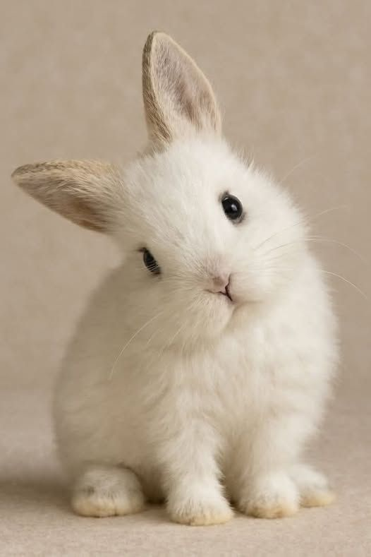

Duke
- Edad: 3 meses
- Sexo: Macho
- Tamaño: Grande
- Estado: Disponible
Duke es un conejo rescatado de una fabrica de maquillaje donde lo usaban para poreubas de productos nuevos, es muy miedoso y un poco introvertido, es importannte tenerle paciencia y aprovecharr cada momento en que decida acompañarte.
Solicitar adopción